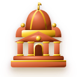
Исторический музей Согдийской области — старейший музей Таджикистана, расположенный в стенах легендарной Худжандской крепости. Более 28 000 уникальных артефактов рассказывают историю от Александра Македонского до наших дней.
Экспонатов
Лет истории
Залов
Года работы
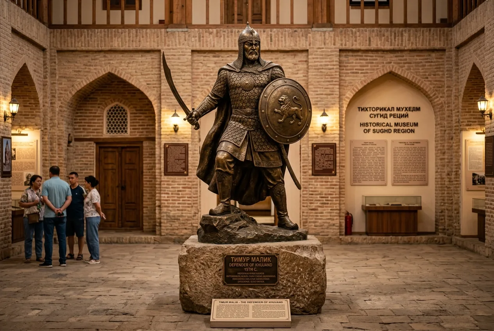
Бронзовая скульптура героя сопротивления монгольскому нашествию высотой 3,5 метра
Исторический музей Согдийской области — старейшее и крупнейшее музейное учреждение на территории Таджикистана. Основанный в 1931 году как краеведческий музей, он прошёл путь от небольшой коллекции до масштабного музейного комплекса в стенах восстановленной Худжандской крепости.
Современное здание с семью куполами было построено в 2003–2006 годах на месте древней цитадели, что символически связывает прошлое и настоящее. Коллекция охватывает хронологический период от каменного века до новейшей истории Таджикистана.
Археология, этнография, нумизматика
На таджикском, русском и английском
Историческая цитадель VI–V вв. до н.э.
Вид на Сырдарью и горы с крепости
Двенадцать тематических залов ведут посетителей сквозь тысячелетия — от первобытных стоянок Согдианы до культурного наследия современного Таджикистана.
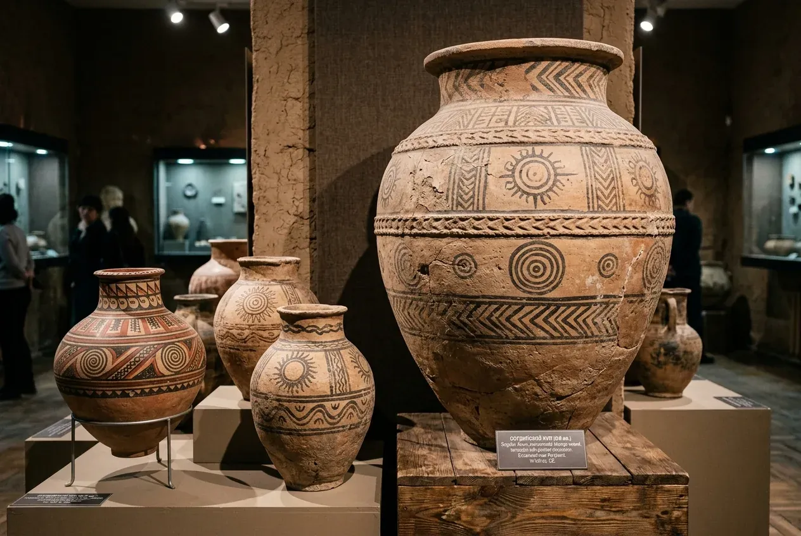
ПостояннаяАрхеологические находки: керамика, бронзовые изделия, орудия труда и терракотовые статуэтки.
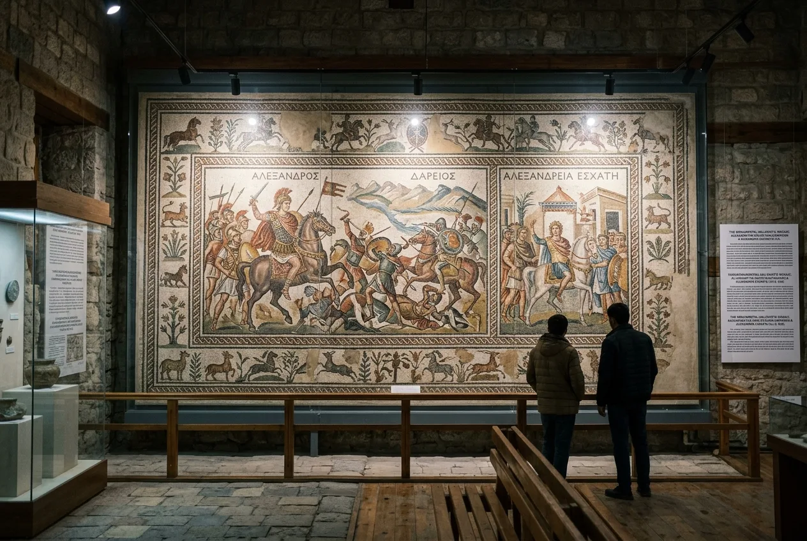
ПопулярнаяОснование Александрии Эсхаты, походы великого полководца, уникальные мраморные мозаики.
Оборона Худжандской крепости от войск Чингисхана, бронзовая статуя героя, средневековое оружие.
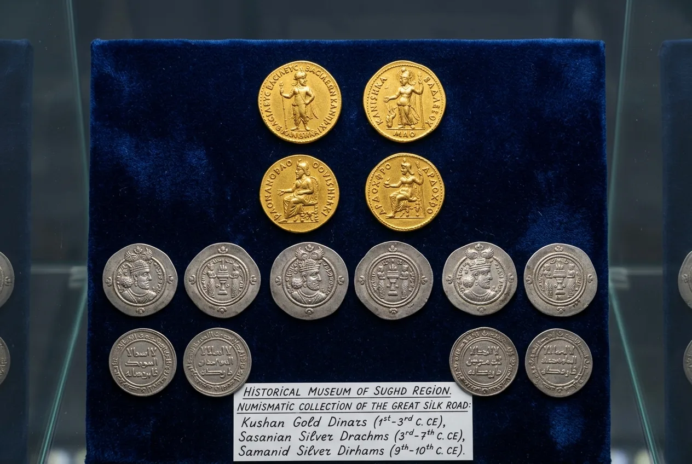
Монеты, торговые документы и предметы, рассказывающие о роли Худжанда на Шёлковом пути.
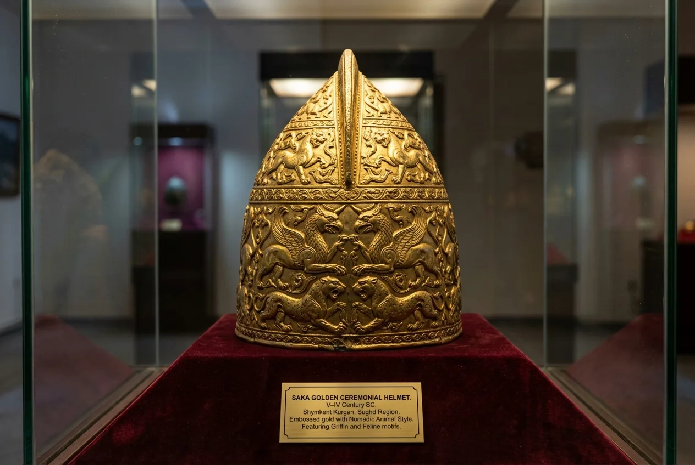
Парадный золотой шлем в зверином стиле и шедевры древнего ювелирного искусства саков.
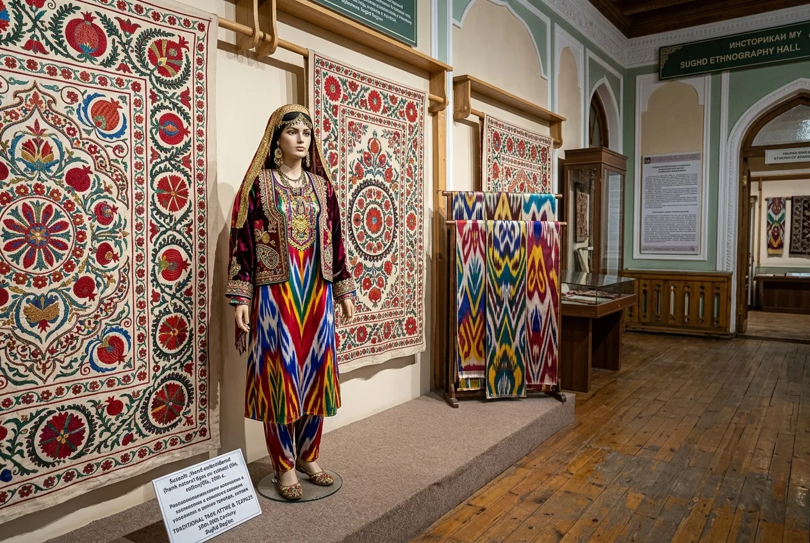
Национальные костюмы, ковры ручной работы, вышивка сюзане, керамика и резьба по дереву.
В фондах музея хранится богатейшая коллекция золотых и бронзовых украшений, созданных мастерами древней Согдианы и Бактрии. Уникальные технологии филиграни, чеканки и инкрустации свидетельствуют о высочайшем мастерстве ремесленников региона.
Экспонаты отражают непрерывный диалог культур Востока и Запада, развивавшийся на пересечении торговых караванных путей.
артефактов в музее
От Александрии Эсхаты до современного Худжанда — путь через тысячелетия.
Александр Македонский основал город «Александрия Крайняя» — самый восточный форпост империи — на берегу Сырдарьи.
Город переименован в Худжанд. Начинается период расцвета исламской культуры, науки и торговли.
Полководец Тимурмалик с гарнизоном героически оборонял крепость от многотысячной армии Чингисхана.
Создан Краеведческий музей Худжанда — первый и старейший музей на территории Таджикистана.
Реконструкция цитадели и открытие современного музейного комплекса с семью куполами.
Подлинные залы, сокровища Согдианы и панорамные виды Худжанда (90+ экспонатов)
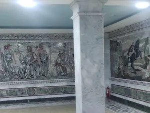
Фортификационные башни Худжанда
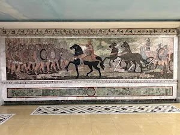
Экспозиция согдийской культуры
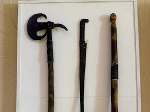
Мозаики Александрии Эсхаты
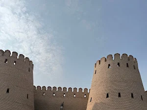
Подвиг Темурмалика
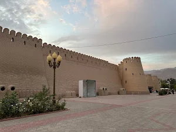
Наконечники стрел и топоры
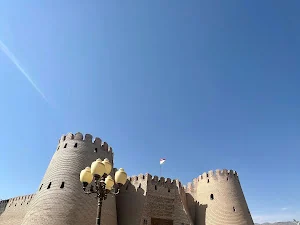
Золотые и серебряные монеты
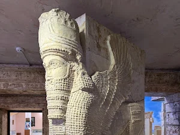
Глазурованная посуда XI–XII вв.
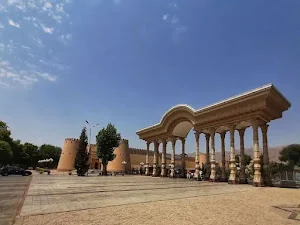
Шелковая вышивка мастеров Согда
Музей расположен в историческом сердце Худжанда — в стенах древней крепости на берегу Сырдарьи.
Понедельник — Воскресенье
08:00 — 17:00
Перерыв: 12:00 — 13:00
Выходной: без выходных
Взрослый билет
Студенты: 3 смн • Школьники: 2 смн • Дети до 7 лет: бесплатно
Индивидуальные и групповые туры на таджикском, русском и английском языках.
Аудиоспектакль: «Эхо Худжанда»